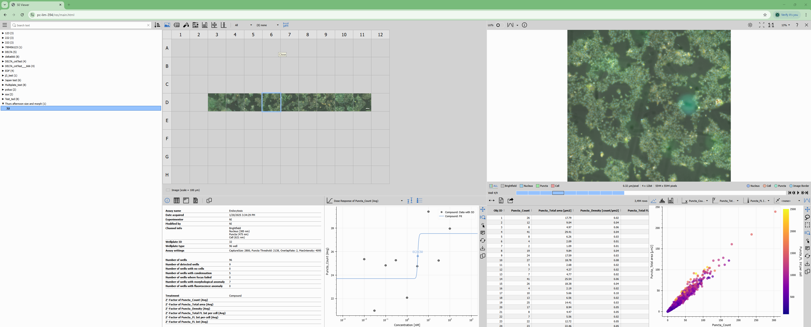

Smart Experiment Server
Version 1.0.0 (January 2025)
The SE Server is a web server providing read access to experiments acquired with NIS Elements software.
Capabilities
- Visualize ND2 files in 2D image view or 3D volume view.
- Viewing on individual channel or all channels.
- Viewing one or more binary layers.
- Using Look-up-tables (LUTs) (per-channel gain) and auto LUTs to enhance image contrast for viewing.
- Navigating through the ND2 frames in all dimensions.
- Visualizing results of analysis.
- Downloading results as CSV, Excel or PDF report.
Guides
Screenshots

© 2025 Laboratory imaging s.r.o.